Обзор
Сопоставление смешивания — одна из ключевых функций CRYENGINE. С помощью карты наложения вы можете смешивать две разные текстуры. Очень полезно разбить повторение, когда вы используете две мозаичные текстуры. Он также может служить для локального загрязнения, износа, потертостей и т. д.
Как только основы работы blend-мэппинга станут известны, возможности использования могут быть безграничны и дадут художнику большую свободу, позволяющую сделать великолепно выглядящий ресурс эффектным с минимальным использованием ресурсов.
В следующем уроке мы объясним основы смешивания карт и на что следует обратить внимание при его использовании.
Как использовать Blend Mapping
Мы будем смешивать эти две текстуры на плоской плоскости.
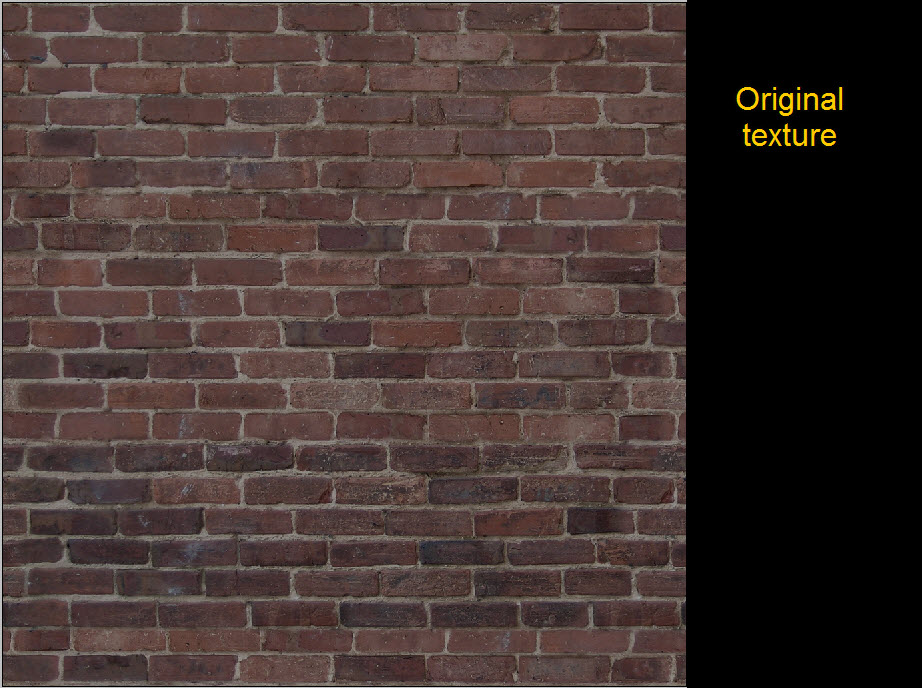 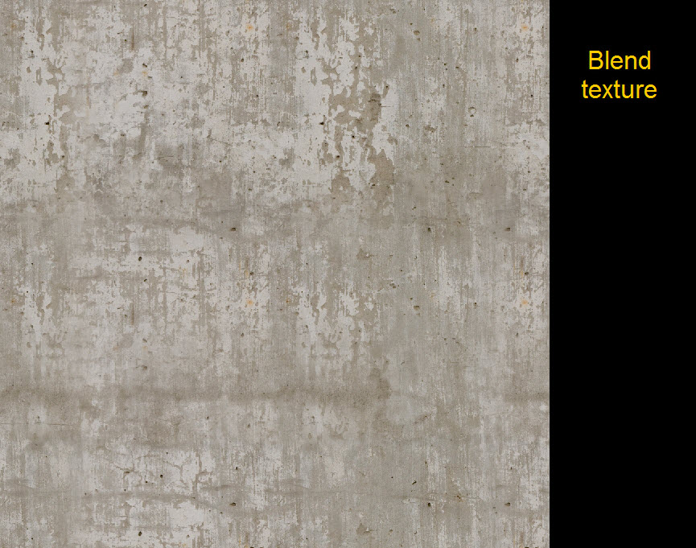
Создание геометрии для смешивания карт
Первое, что нам нужно сделать, прежде чем мы сможем смешать карту, — это правильно подготовить нашу геометрию. Единственное предостережение при отображении смешивания заключается в том, что оно привязано к нашим вершинам в геометрии. Это означает, что нам нужно добавить больше геометрии в тех местах, где мы обычно не стал бы. Это также означает, что нам нужно моделировать очень чисто и аккуратно, потому что чем более равномерными будут подразделения, тем лучшего результата мы сможем достичь при смешивании. Кроме того: чем больше подразделений мы добавим, тем точнее мы сможем определить, где смешивать, а где нет.
В современной разработке игр геометрия обходится немного дешевле, чем использование большого количества текстур. Поскольку long мы сохраняем разумное количество вершин, оно должно быть OK.
Ниже мы создали полиплоскость с подразделениями:
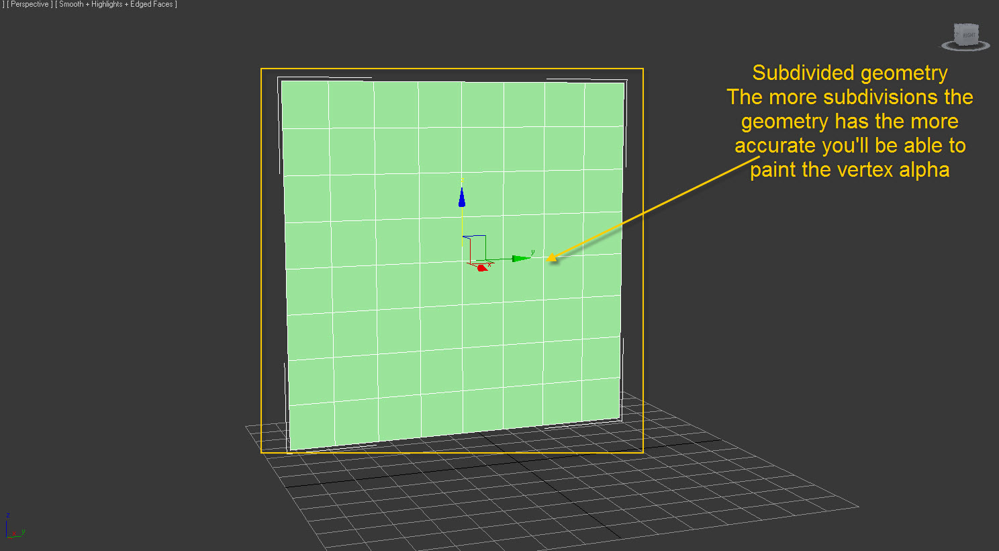
Рисуем вершину Альфа
Чтобы контролировать смешивание и то, где оно будет отображаться на нашем активе, нам нужно раскрасить нашу вершину альфа. Диапазон нашего спектра составляет 0–255, где 0 — черный, а 255 — белый.
Если альфа-вершина нашего актива равна 255 (чисто-белая), это означает, что будет отображаться только исходная текстура. На другом конце спектра, если значение альфа-вершины равно 0 (чистый черный), будет отображаться переход.
Поскольку у нас есть диапазон от 0 до 255, мы можем использовать весь спектр и решать, насколько и где мы хотим, чтобы смесь проявлялась.
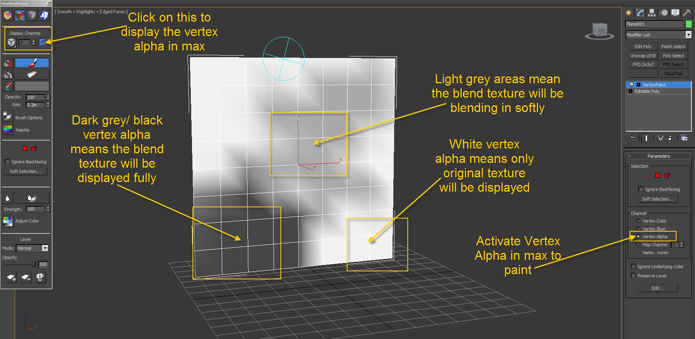
Создание смешанной маски
Чтобы еще больше разбить мозаику и получить еще больший контроль над тем, как будут смешиваться наши текстуры, у нас есть маска смешивания. Маска смешивания действует как альфа. Благодаря этому мы можем видеть части нашей исходной текстуры, даже если эта часть нашей вершины альфа на геометрии окрашена в черный цвет.
Поскольку наша маска наложения действует как альфа, все белые части будут отображать нашу текстуру наложения, а все черные части будут отображать исходную текстуру.
Как вы можете видеть ниже, мы взяли кирпичный узор и добавили немного шума. Еще мы для повышения правдоподобности сделали затирку в некоторых местах черной, чтобы проглядывала оригинальная затирка из кирпичей.
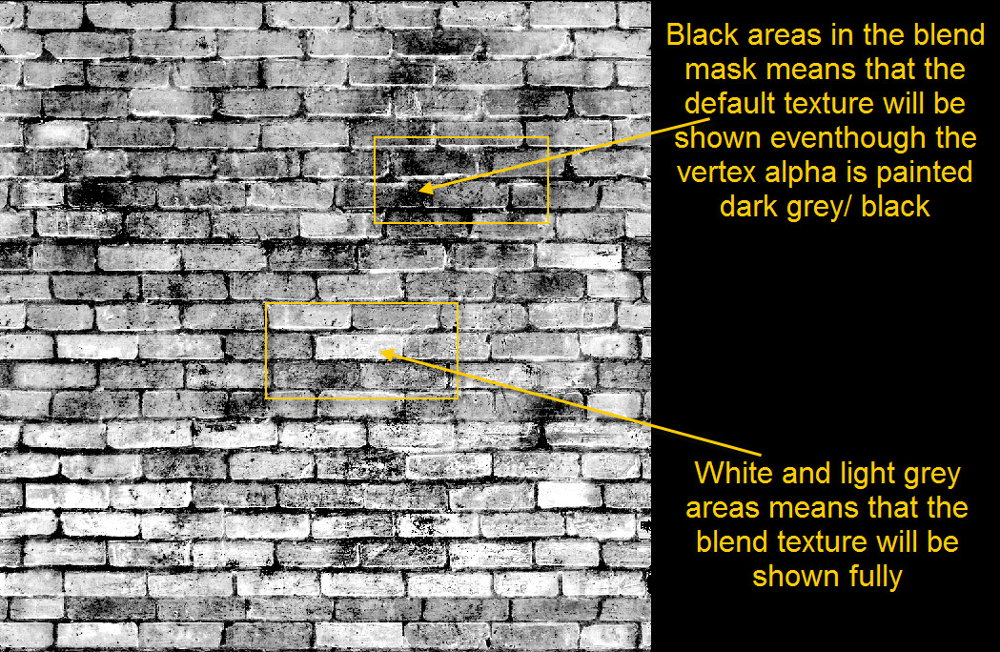
3ds Max Настройка объекта
Добавьте в стек модификатор рисования вершин и измените канал на вершину альфа. Это очень важно отделить, так как для этой функции вы должны использовать вершину альфа, а не цвет вершины.
Откройте окно свойств объектов актива и включите отображение цвета вершин, но измените отображение на вершину альфа. Чтобы быть уверенным, что вы не рисуете не тот канал, вы всегда можете переключаться туда и обратно в режим предварительного просмотра цвета вершин.
Все текстуры тайловые и не используют уникальные оболочки UV. В этом случае вы не можете использовать запеченную фоновую карту OCC, но все же можно использовать запеченные цветные тени вершин на активе.
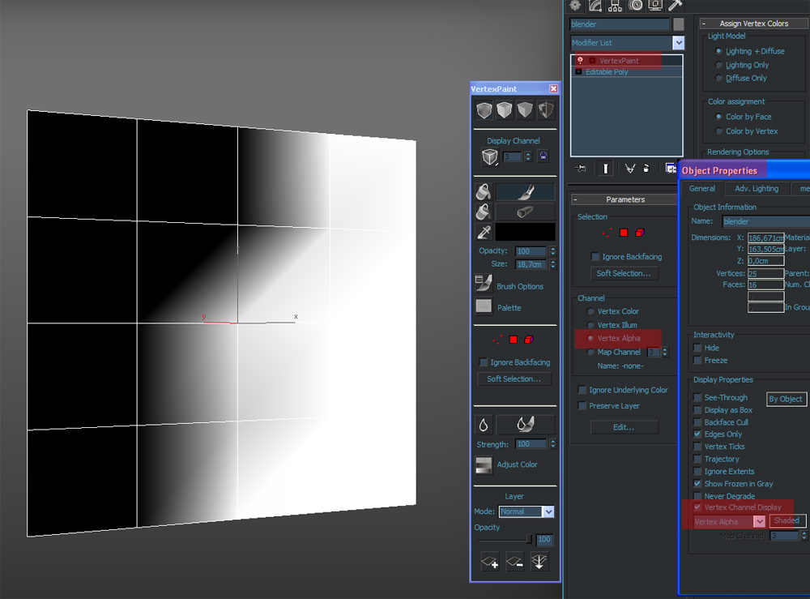
Вы можете использовать наш шейдер смешивания для 3ds Max не только для предварительного просмотра результата, но и для рисования альфа-вершины в реальном времени.
Откройте Material Editor и переключите стандартный материал на шейдер DirectX, где вместо этого вы можете загрузить шейдер слоя смешивания и получить все аналогичные параметры редактора песочницы для настройки значений.
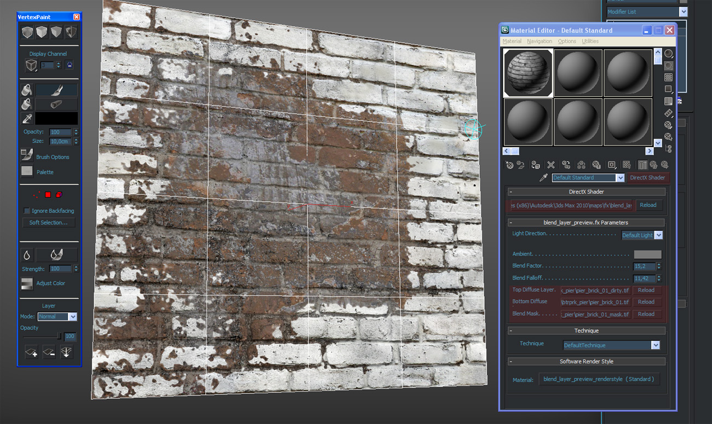
Настройка материала в CRYENGINE для Blend Mapping
Когда у вас есть текстуры, пришло время перенести их в CRYENGINE. После того, как ассет находится в движке и назначен шейдер, нам нужно активировать слой смешивания.
Для этого:
- В Material Editor откройте Параметры генерации шейдеров вкладка
- Нажмите на Блендлейер флажок
- Стали доступны новые слоты
Дополнительные слоты называются:
- Карта смешивания (здесь загружается ваша маска смешивания).
- Вторая диффузная карта (здесь загружается ваш смешанный диффузный фон).
- Вторая карта рельефа (здесь загружается ваша смешанная карта нормалей/оригинальная карта нормалей).
В них мы загрузим наши смешанные текстуры.
Хороший совет — загрузить ту же карту нормалей из исходной текстуры, таким образом она придаст смешанной текстуре кирпичный узор.
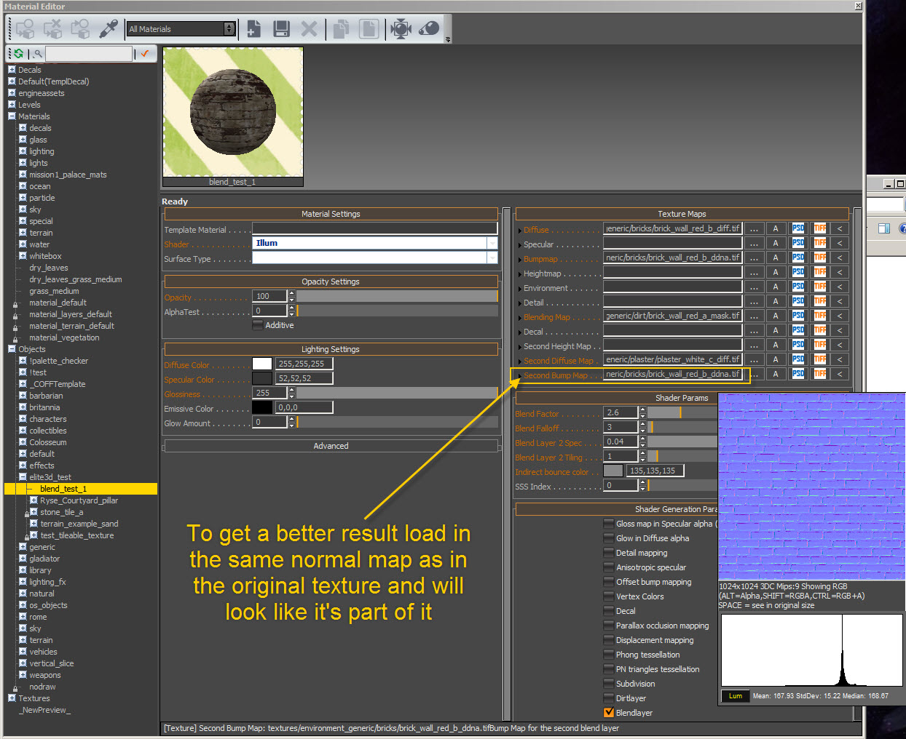
Настройка смесей в CRYENGINE
У смеси есть две настройки, которые необходимо настроить, чтобы получить хороший результат. Вы можете найти их в Параметры шейдера.
Они следующие:
- Фактор смешивания
- Сглаживание спада
Путем настройки Фактор смешивания мы можем настроить, какая часть текстуры смешивания будет смешиваться. Другими словами, она действует как ползунок непрозрачности в Photoshop.
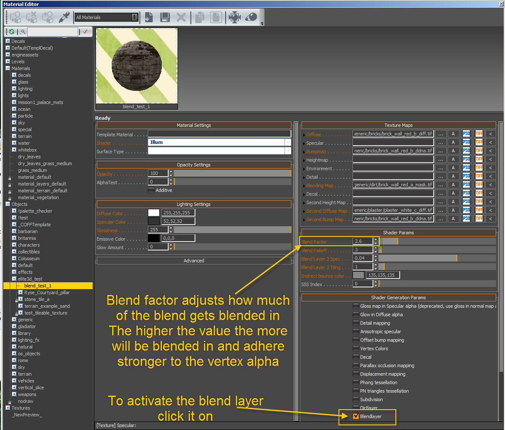
Путем настройки Сглаживание спада мы можем настроить резкость контраста между смешанной текстурой и исходной текстурой.
Другими словами, мы регулируем растушевку маски смешивания. Это означает, что чем выше значение, тем мягче становится наша альфа (в данном случае это маска смешивания).
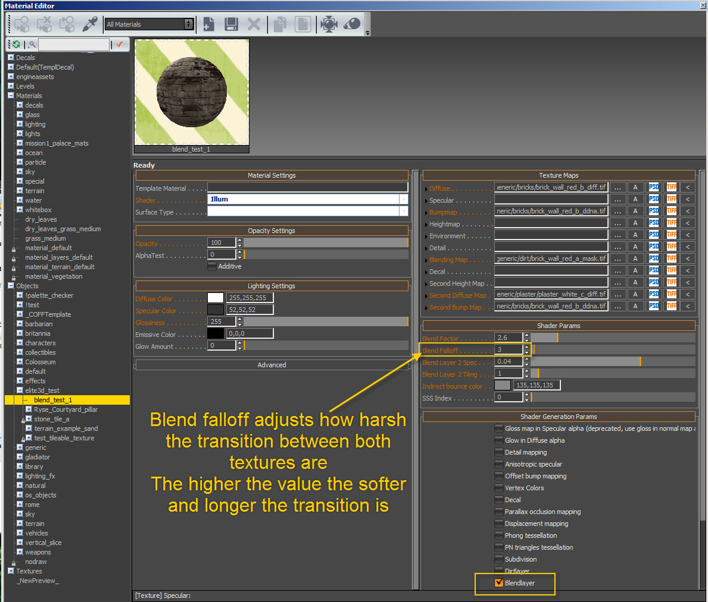
Как только у вас есть изменено все, у вас должен получиться такой результат:
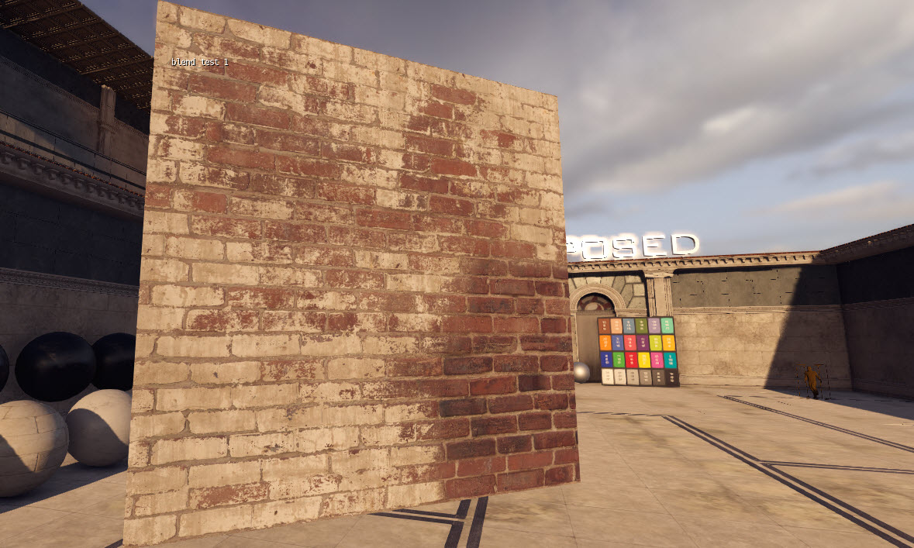 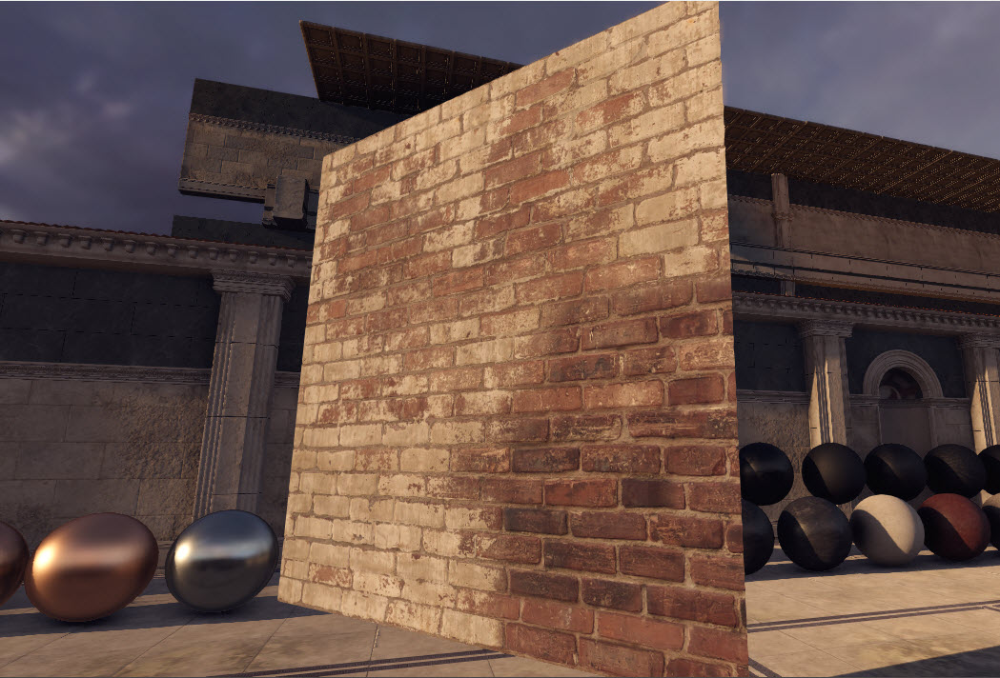
Как вы можете видеть, нижний правый угол полностью свободен от перетекания, поскольку эту часть мы оставили белой, и сквозь нее проходит только исходная текстура.
Вы также можете увидеть, как противоположный нижний левый угол полностью совмещен. Но вы также можете видеть, что затирка — оригинальная, поскольку нашу маску смешивания мы оставили черной.